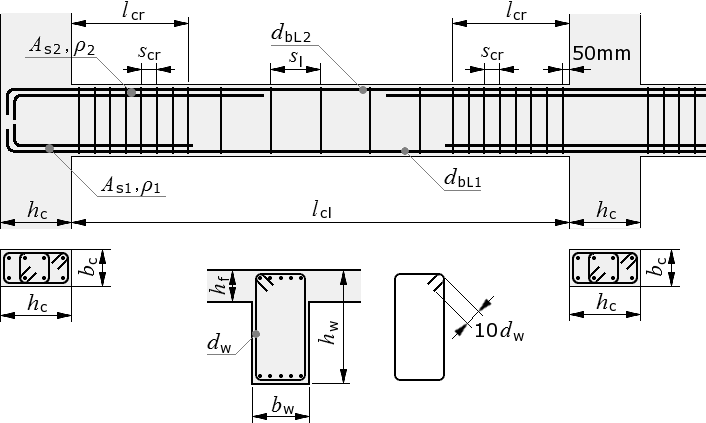
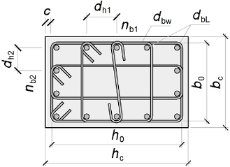
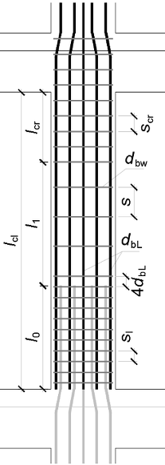
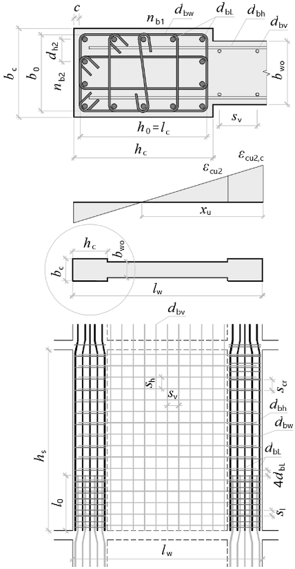
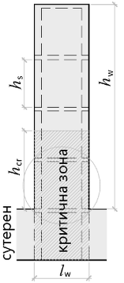

Reinforced Concrete: Seismic Detailing¶
CalcpadCE worksheets in this section build the seismic detailing checks of reinforced concrete primary members of medium ductility class (DCM) according to Eurocode 8: the geometry of the critical regions, the minimum and maximum reinforcement ratios, the spacing of the transverse reinforcement and the confinement requirements at the plastic hinges.
The beam detailing sheet covers a rectangular beam with a slab flange and verifies the longitudinal ratio, the spacing of the closed stirrups inside the critical region of length \(l_{cr}\) and the lap-splice requirements for the bottom and top bars. The column detailing sheet checks the dimensions of the cross-section, the longitudinal ratio, the confinement of the boundary regions for the maximum seismic axial load and the minimum mechanical volumetric ratio of the hoops. The shear wall detailing sheet addresses the confined boundary elements at the wall ends, the web horizontal and vertical reinforcement and the curvature ductility verification at the base of the wall.
Beam Detailing for DCM¶
Eurocode 8 detailing of a primary seismic beam for medium ductility class: critical region length \(l_{cr}\), longitudinal ratio limits, spacing of closed stirrups and lap-splice requirements.
'<small>According to <strong>Eurocode</strong>: EN 1998-1</small>
'<div style="max-width:180mm">
'<img style="width:375pt;" style="max-width:100%;" src="../../Images/structures/rc/detailing/beam.png" alt="beam.png">
'<p><b>Beam dimensions</b></p>
'Cross section - 'b_w = ? {350}'mm, 'h_w = ? {650}'mm
'Clear beam span -'l_cl = ? {5000}'mm
'Slab depth -'h_f = ? {130}'mm
#post
'Cross section area -'A_c = b_w*h_w'mm²
#show
'Dimensions of columns -'b_c = ? {500}'mm,'h_c = ? {500}'mm
'Maximum seismic axial load in beam -'N_Ed = ? {0}'kN
'<p><b>Concrete</b></p>
'Characteristic compressive cylinder strength -'f_ck = ? {25}'MPa
'Partial safety factor -'γ_c = 1.5','α_ct = 1','α_cc = ? {1}
#post
'Design compressive cylinder strength -'f_cd = α_cc*f_ck/γ_c'MPa
'Mean value of axial tensile strength -'f_ctm = 0.30*f_ck^(2/3)'MPa
'Characteristic axial tensile strength -'f_ctk,005 = 0.7*f_ctm'MPa
'<p class="ref">[§ 5.1.2 (1)]</p>
'<p><b>Check for normalized axial load</b></p>
ν_d = N_Ed/(A_c*f_cd)*1000
#if ν_d > 0.1
'<p class="err">'ν_d'> 0.1. The check is NOT satisfied! ❌</p>
#else
ν_d'≤ 0.1. The check is satisfied! ✓
#end if
'<p class="ref">[§ 5.4.1.2.1 (3)]</p>
'<p><b>Beam width check</b></p>
b_w,max = min(b_c + h_w;2*b_c)'mm
#if b_w ≤ b_w,max
b_w'mm ≤'b_w,max'mm. The check is satisfied! ✓
#else
'<p class="err">'b_w'mm >'b_w,max'mm. The check is NOT satisfied! ❌</p>
#end if
'<p class="ref">[§ 5.4.3.1.1 (3)]</p>
'<p><b>Maximum effective flange width</b></p>
'<table class="bordered"><tr><th></th><th>Exterior column</th><th>Interior column</th></tr>
'<tr><th>In the absence of transverse beam</th><td>'b_c'mm</td><td>'b_c + 4*h_f'mm</td></tr>
'<tr><th>With transverse beam</th><td>'b_c + 4*h_f'mm</td><td>'b_c + 8*h_f'mm</td></tr></table>
#show
'<p><b>Longitudinal reinforcement</b></p>
'<p id="C" style="display:none;">'C = ? {0}'</p>
'Characteristic yield strength -'f_yk = ? {500}'MPa
#pre
'<p>Steel class - <select data-target="C">
'<option value="0"> Class B </option>
'<option value="1"> Class C </option>
'</select></p>
#post
#val
#if C ≡ 0
'Selected steel class <b>B'f_yk'B</b>
#else if C ≡ 1
'Selected steel class <b>B'f_yk'C</b>
#else
'<p class="err">Invalid steel class!</p>
#end if
#equ
'Partial safety factor for steel -'γ_s = 1.15
'Design yield strength -'f_yd = f_yk/γ_s'MPa
'Modulus of elasticity -'E_s = 200000'MPa
#show
'<p><b>Bottom reinforcement in critical regions</b></p>
'Bar diameter -'d_bL1 = ? {16}'mm
'Effective cross section depth -'d_1 = ? {590}'mm
'Reinforcement area -'A_s1 = ? {1005}'mm²
#post
'Reinforcement ratio -'ρ_1 = A_s1/(b_w*d_1)
'<p class="ref">[§ 5.4.3.1.2 (5)]</p>
'Minimum reinforcement ratio
ρ_min = 0.5*f_ctm/f_yk
'Maximum reinforcement ratio -'ρ_max = 0.04
#if ρ_1 < ρ_min
'<p class="err">The reinforcement ratio is less than the minimum:'ρ_1'<'ρ_min'. ❌</p>
#else if ρ_1 > ρ_max
'<p class="err">The reinforcement ratio is greater than the maximum:'ρ_1'>'ρ_max'. ❌</p>
#else
'Design check:'ρ_min'≤'ρ_1'≤'ρ_max'. The check is satisfied! ✓
#end if
'<p><b>Design anchorage length</b></p>
η_1 = 1 'when good conditions are obtained
#if d_bL1 ≤ 32
η_2 = 1'- for'd_bL1'≤ 32 mm
#else
η_2 = (132 - d_bL1)/100'- for'd_bL1'> 32 mm
#end if
f_ctd = α_ct*f_ctk,005/γ_c'MPa
'<p class="ref">[EN 1992-1-1, § 8.4.2 (2)]</p>
f_bd = 2.25*η_1*η_2*f_ctd'MPa
σ_sd = f_yd'MPa
'<p class="ref">[EN 1992-1-1, § 8.4.3 (2)]</p>
l_b,rqd = d_bL1/4*(σ_sd/f_bd)'mm
'<p class="ref">[EN 1992-1-1, Table 8.2]</p>
α_1 = 1','α_2 = 1','α_3 = 1','α_4 = 1','α_5 = 1
'<p class="ref">[EN 1992-1-1, § 8.4.4 (1)]</p>
l_bd_ = α_1*α_2*α_3*α_4*α_5*l_b,rqd'mm
l_b,min = max(0.6*l_b,rqd;10*d_bL1;100)'mm
l_bd = round(max(l_bd_;l_b,min))'mm
#show
'<p><b>Top reinforcement at supports</b></p>
'Bar diameter -'d_bL2 = ? {20}'mm
'Effective cross section depth -'d_2 = ? {590}'mm
'Reinforcement area -'A_s2 = ? {1571}'mm²
#post
'Reinforcement ratio -'ρ_2 = A_s2/(b_w*d_2)
#show
'Fundamental period of first vibration mode -'T_1 = ? {0.55}'s
'Upper limit period of constant spectral acceleration -'T_C = ? {0.60}'s
'Basic behavior factor value -'q_0 = ? {3.9}
#post
'Curvature ductility factor
'<p class="ref">[§ 5.2.3.4 (3)]</p>
#if T_1 ≥ T_C
μ_Φ = 1.0*(2*q_0 - 1)'- for T<sub>1</sub> ≥ T<sub>C</sub>
#else
μ_Φ = 1.0*(1 + 2*(q_0 - 1)*(T_C/T_1))'- for T<sub>1</sub> < T<sub>C</sub>
#end if
#if C ≡ 0
'<!--'μ_Φ = 1.5*μ_Φ'-->
'<p class="ref">[§ 5.2.3.4 (4)]</p>
'For steel class B, ductility factor is increased by 05% -'μ_Φ
#end if
'Design value of steel yield strain -'ε_sy,d = f_yd/E_s
'Maximum reinforcement ratio at critical regions
ρ_max = ρ_1 + 0.0018*f_cd/(μ_Φ*ε_sy,d*f_yd)
#if ρ_2 < ρ_min
'<p class="err">Reinforcement ratio is less than minimum:'ρ_2'<'ρ_min'. ❌</p>
#else if ρ_2 > ρ_max
'<p class="err">Reinforcement ratio is greater than maximum:'ρ_2'>'ρ_max'. ❌</p>
#else
'Design check:'ρ_min'≤'ρ_2'≤'ρ_max'. The check is satisfied! ✓
#end if
'<p><b>Design anchorage length</b></p>
#hide
#if d_bL2 ≤ 32
η_2 = 1
#else
η_2 = (132 - d_bL2)/100
#end if
f_bd = 2.25*η_1*η_2*f_ctd
l_b,rqd = d_bL2/4*σ_sd/f_bd
l_bd_ = α_1*α_2*α_3*α_4*α_5*l_b,rqd
l_b,min = max(0.6*l_b,rqd;10*d_bL2;100)
#post
l_bd = round(max(l_bd_;l_b,min))'mm
'<p><b>Limit of bar diameter to column size</b></p>
'Model uncertainty factor -'γ_Rd = 1.0
'Factor reflecting the ductility class -'k_D = 2/3
'Maximum diameter of longitudinal reinforcement 'd_bL = max(d_bL1;d_bL2)'mm
#show
'<p class="ref">[§ 5.6.2.2 (2), a)]</p>
'<p><b>For interior beam-column joints</b></p>
'Minimal normalized design axial force at column -'ν_d = ? {0.14}'(<var>ν</var><sub>d</sub> = <var>N</var><sub>Еd</sub> / <var>f</var><sub>cd</sub><var>A</var><sub>c</sub>)
#post
d_bL,max = h_c*7.5*f_ctm/(γ_Rd*f_yd)*(1 + 0.8*ν_d)/(1 + 0.75*k_D*ρ_1/ρ_max)'mm
#if d_bL > d_bL,max
'<p class="err">'d_bL'mm >'d_bL,max'mm. The check is NOT satisfied! ❌
#else
'Design check:'d_bL'mm ≤'d_bL,max'mm. The check is satisfied! ✓
#end if
#show
'<p class="ref">[§ 5.6.2.2 (2), b)]</p>
'<p><b>For exterior beam-column joints</b></p>
'Minimal normalized design axial force at column -'ν_d = ? {0.07}
#post
d_bL,max = h_c*7.5*f_ctm/(γ_Rd*f_yd)*(1 + 0.8*ν_d)'mm
#if d_bL > d_bL,max
'<p class="err">'d_bL'mm >'d_bL,max'mm. The check is NOT satisfied! ❌'
#else
'Design check:'d_bL'mm ≤'d_bL,max'mm. The check is satisfied! ✓
#end if
'According to § 5.6.2.2 (4), Top or bottom bars passing through interior joints, shall terminate in the members framing into the joint at a distance not less than <var>l</var><sub>cr</sub>.
#show
'<p><b>Transverse reinforcement</b></p>
'Hoop diameter -'d_bw = ? {6}'mm
'Characteristic yield strength -'f_ywk = ? {500}'MPa
#post
'Design yield strength -'f_ywd = f_ywk/γ_s'MPa
'<p class="ref">[§ 5.4.3.1.2 (6), a)]</p>
'Minimum diameter -'d_bw,min = 6'mm
#if d_bw < d_bw,min
'<p class="err">Hoop diameter is smaller than the minimum:</p>
'<p class="err">'d_bw'<'d_bw,min'mm. ❌</p>
#else
'Design check:'d_bw'≥'d_bw,min'mm. The check is satisfied! ✓
#end if
'<p class="ref">[§ 5.4.3.1.2 (1)]</p>
'<p><b>Critical region length</b> -'l_cr = h_w'mm</p>
'Minimum longitudinal bars diameter -'d_bL = min(d_bL1; d_bL2)'mm
'Effective cross section depth -'d = min(d_1; d_2)'mm
'<p><b>Hoop spacing</b></p>
'<p class="ref">[§ 5.4.3.1.2 (6), b)]</p>
'Inside critical regions:
s_cr,max = min(h_w/4; 24*d_bw; 8*d_bL; 225)'mm
'<p class="ref">[EN 1992-1-1, § 9.2.2 (6)]</p>
'Outside critical regions:
s_l,max = 0.75*d'mm
'<p class="ref">[§ 5.4.3.1.2 (6), c)]</p>
'Maximum distance from column edge to the first hoop - 50 mm
'Minimum reinforcement ratio for transverse reinforcement
'<p class="ref">[EN 1992-1-1 NA.2.79, § 9.2.2 (5)]</p>
ρ_w,min = 0.10*sqr(f_ck)/f_ywk
'NOTE: All references are according to EN 1998-1, unless noted otherwise.
#show
'</div>

Beam dimensions
Cross section - bw = 350 mm, hw = 650 mm
Clear beam span - lcl = 5000 mm
Slab depth - hf = 130 mm
Cross section area - Ac = bw · hw = 350 · 650 = 227500 mm²
Dimensions of columns - bc = 500 mm, hc = 500 mm
Maximum seismic axial load in beam - NEd = 0 kN
Concrete
Characteristic compressive cylinder strength - fck = 25 MPa
Partial safety factor - γc = 1.5 , αct = 1 , αcc = 1
Design compressive cylinder strength - fcd = αcc · fckγc = 1 · 251.5 = 16.67 MPa
Mean value of axial tensile strength - fctm = 0.3 · fck23 = 0.3 · 2523 = 2.56 MPa
Characteristic axial tensile strength - fctk,005 = 0.7 · fctm = 0.7 · 2.56 = 1.8 MPa
[§ 5.1.2 (1)]
Check for normalized axial load
νd = NEdAc · fcd · 1000 = 0227500 · 16.67 · 1000 = 0
νd = 0 ≤ 0.1. The check is satisfied! ✓
[§ 5.4.1.2.1 (3)]
Beam width check
bw,max = min ( bc + hw; 2 · bc ) = min ( 500 + 650; 2 · 500 ) = 1000 mm
bw = 350 mm ≤ bw,max = 1000 mm. The check is satisfied! ✓
[§ 5.4.3.1.1 (3)]
Maximum effective flange width
| Exterior column | Interior column | |
|---|---|---|
| In the absence of transverse beam | bc = 500 mm | bc + 4 · hf = 500 + 4 · 130 = 1020 mm |
| With transverse beam | bc + 4 · hf = 500 + 4 · 130 = 1020 mm | bc + 8 · hf = 500 + 8 · 130 = 1540 mm |
Longitudinal reinforcement
Characteristic yield strength - fyk = 500 MPa
Selected steel class B500BPartial safety factor for steel - γs = 1.15
Design yield strength - fyd = fykγs = 5001.15 = 434.78 MPa
Modulus of elasticity - Es = 200000 MPa
Bottom reinforcement in critical regions
Bar diameter - dbL1 = 16 mm
Effective cross section depth - d1 = 590 mm
Reinforcement area - As1 = 1005 mm²
Reinforcement ratio - ρ1 = As1bw · d1 = 1005350 · 590 = 0.00487
[§ 5.4.3.1.2 (5)]
Minimum reinforcement ratio
ρmin = 0.5 · fctmfyk = 0.5 · 2.56500 = 0.00256
Maximum reinforcement ratio - ρmax = 0.04
Design check: ρmin = 0.00256 ≤ ρ1 = 0.00487 ≤ ρmax = 0.04 . The check is satisfied! ✓
Design anchorage length
η1 = 1 when good conditions are obtained
η2 = 1 - for dbL1 = 16 ≤ 32 mm
fctd = αct · fctk,005γc = 1 · 1.81.5 = 1.2 MPa
[EN 1992-1-1, § 8.4.2 (2)]
fbd = 2.25 · η1 · η2 · fctd = 2.25 · 1 · 1 · 1.2 = 2.69 MPa
σsd = fyd = 434.78 MPa
[EN 1992-1-1, § 8.4.3 (2)]
lb,rqd = dbL14 · σsdfbd = 164 · 434.782.69 = 645.75 mm
[EN 1992-1-1, Table 8.2]
α1 = 1 , α2 = 1 , α3 = 1 , α4 = 1 , α5 = 1
[EN 1992-1-1, § 8.4.4 (1)]
lbd_ = α1 · α2 · α3 · α4 · α5 · lb,rqd = 1 · 1 · 1 · 1 · 1 · 645.75 = 645.75 mm
lb,min = max ( 0.6 · lb,rqd; 10 · dbL1; 100 ) = max ( 0.6 · 645.75; 10 · 16; 100 ) = 387.45 mm
lbd = round ( max ( lbd_; lb,min ) ) = round ( max ( 645.75; 387.45 ) ) = 646 mm
Top reinforcement at supports
Bar diameter - dbL2 = 20 mm
Effective cross section depth - d2 = 590 mm
Reinforcement area - As2 = 1571 mm²
Reinforcement ratio - ρ2 = As2bw · d2 = 1571350 · 590 = 0.00761
Fundamental period of first vibration mode - T1 = 0.55 s
Upper limit period of constant spectral acceleration - TC = 0.60 s
Basic behavior factor value - q0 = 3.9
Curvature ductility factor
[§ 5.2.3.4 (3)]
μΦ = 1 · (1 + 2 · ( q0 − 1 ) · TCT1) = 1 · (1 + 2 · ( 3.9 − 1 ) · 0.60.55) = 7.33 - for T1 < TC
[§ 5.2.3.4 (4)]
For steel class B, ductility factor is increased by 05% - μΦ = 10.99
Design value of steel yield strain - εsy,d = fydEs = 434.78200000 = 0.00217
Maximum reinforcement ratio at critical regions
ρmax = ρ1 + 0.0018 · fcdμΦ · εsy,d · fyd = 0.00487 + 0.0018 · 16.6710.99 · 0.00217 · 434.78 = 0.00775
Design check: ρmin = 0.00256 ≤ ρ2 = 0.00761 ≤ ρmax = 0.00775 . The check is satisfied! ✓
Design anchorage length
lbd = round ( max ( lbd_; lb,min ) ) = round ( max ( 807.18; 484.31 ) ) = 807 mm
Limit of bar diameter to column size
Model uncertainty factor - γRd = 1
Factor reflecting the ductility class - kD = 23 = 0.667
Maximum diameter of longitudinal reinforcement dbL = max ( dbL1; dbL2 ) = max ( 16; 20 ) = 20 mm
[§ 5.6.2.2 (2), a)]
For interior beam-column joints
Minimal normalized design axial force at column - νd = 0.14 (νd = NЕd / fcdAc)
dbL,max = hc · 7.5 · fctmγRd · fyd · ( 1 + 0.8 · νd ) 1 + 0.75 · kD · ρ1ρmax = 500 · 7.5 · 2.561 · 434.78 · ( 1 + 0.8 · 0.14 ) 1 + 0.75 · 0.667 · 0.004870.00775 = 18.72 mm
dbL = 20 mm > dbL,max = 18.72 mm. The check is NOT satisfied! ❌
[§ 5.6.2.2 (2), b)]
For exterior beam-column joints
Minimal normalized design axial force at column - νd = 0.07
dbL,max = hc · 7.5 · fctmγRd · fyd · ( 1 + 0.8 · νd ) = 500 · 7.5 · 2.561 · 434.78 · ( 1 + 0.8 · 0.07 ) = 23.36 mm
Design check: dbL = 20 mm ≤ dbL,max = 23.36 mm. The check is satisfied! ✓
According to § 5.6.2.2 (4), Top or bottom bars passing through interior joints, shall terminate in the members framing into the joint at a distance not less than lcr.
Transverse reinforcement
Hoop diameter - dbw = 6 mm
Characteristic yield strength - fywk = 500 MPa
Design yield strength - fywd = fywkγs = 5001.15 = 434.78 MPa
[§ 5.4.3.1.2 (6), a)]
Minimum diameter - dbw,min = 6 mm
Design check: dbw = 6 ≥ dbw,min = 6 mm. The check is satisfied! ✓
[§ 5.4.3.1.2 (1)]
Critical region length - lcr = hw = 650 mm
Minimum longitudinal bars diameter - dbL = min ( dbL1; dbL2 ) = min ( 16; 20 ) = 16 mm
Effective cross section depth - d = min ( d1; d2 ) = min ( 590; 590 ) = 590 mm
Hoop spacing
[§ 5.4.3.1.2 (6), b)]
Inside critical regions:
scr,max = min(hw4; 24 · dbw; 8 · dbL; 225) = min(6504; 24 · 6; 8 · 16; 225) = 128 mm
[EN 1992-1-1, § 9.2.2 (6)]
Outside critical regions:
sl,max = 0.75 · d = 0.75 · 590 = 442.5 mm
[§ 5.4.3.1.2 (6), c)]
Maximum distance from column edge to the first hoop - 50 mm
Minimum reinforcement ratio for transverse reinforcement
[EN 1992-1-1 NA.2.79, § 9.2.2 (5)]
ρw,min = 0.1 · √ fckfywk = 0.1 · √ 25500 = 0.001
NOTE: All references are according to EN 1998-1, unless noted otherwise.
Column Detailing for DCM¶
Eurocode 8 detailing of a primary seismic column for medium ductility class: cross-section dimensions, longitudinal ratio, confinement of the boundary regions and minimum mechanical volumetric ratio of the hoops.
'<small>According to <strong>Eurocode</strong>: EN 1998-1</small>
'<div style="max-width:180mm">
'<img class="side" style="width:220pt;" src="../../Images/structures/rc/detailing/column-section.png" alt="column-section.png">
'<p><b>Column dimensions</b></p>
'Cross section -'b_c = ? {500}'mm,'h_c = ? {500}'mm
'Clear storey height -'l_cl = ? {2850}'mm
'Cross section area -'A_c = b_c*h_c'mm²
'Maximum seismic axial load -'N_Ed = ? {983.8}'kN
'<p class="ref">[EN 1992-1-1, Table 3.1]</p>
'<p><b>Concrete</b></p>
'Characteristic compressive cylinder strength -'f_ck = ? {25}'MPa
'Partial safety factor -'γ_c = 1.5','α_ct = 1','α_cc = ? {1}
'<img class="side" style="width:130pt;" src="../../Images/structures/rc/detailing/column-view.png" alt="column-view.png">
#post
'Mean value of axial tensile strength
f_ctm = 0.30*f_ck^(2/3)'MPa
'Characteristic axial tensile strength
f_ctk,005 = 0.7*f_ctm'MPa
'Design compressive cylinder strength
f_cd = α_cc*f_ck/γ_c'MPa
#show
'<p><b>Longitudinal reinforcement</b></p>
'<p id="C" style="display:none;">'C = ? {0}'</p>
'Characteristic yield strength -'f_yk = ? {500}'MPa
#pre
'<p>Steel class - <select data-target="C">
'<option value="0"> Class B </option>
'<option value="1"> Class C </option>
'</select></p>
#post
#val
#if C ≡ 0
'Selected steel class <b>B'f_yk'B</b>
#else if C ≡ 1
'Selected steel class <b>B'f_yk'C</b>
#else
'<p class="err">Invalid steel class!</p>
#end if
#equ
'Partial safety factor for steel -'γ_s = 1.15
'Design yield strength -'f_yd = f_yk/γ_s'MPa
'Modulus of elasticity -'E_s = 200000'MPa
#show
'Bar diameter -'d_bL = ? {28}'mm
#post
'<p class="ref">[BS EN 1992-1-1, § 9.5.2 (1)/NA.1]</p>
'Minimum bar diameter -'d_bL,min = 12'mm
#if d_bL < d_bL,min
'<p class="err">The bar diameter is less than the minimum:'d_bL'mm <'d_bL,min'mm</p>
#end if
#show
'Bar count -'n_b = ? {12}
'Bar count along "<var>h</var><sub>c</sub>" -'n_b1 = ? {4}
#post
'Bar count along "<var>b</var><sub>c</sub>" -'n_b2 = n_b/2 - n_b1 + 2
#if n_b < 4
'<p class="err">The bar count is'n_b'< 4</p>
#else if (n_b1 < 3) + (n_b2 < 3)
'<p class="ref">[§ 5.4.3.2.2 (2)]</p>
'<p class="err">Minimum one intermediate bar at each side is required.</p>
#end if
'Reinforcement area
A_s1 = π*d_bL^2/4'mm²
A_s = n_b*A_s1'mm²
'Reinforcement ratio
ρ_L = A_s/A_c
'<p class="ref">[§ 5.4.3.2.2 (1)]</p>
#if ρ_L < 0.01
'<p class="err">The reinforcement ratio is less than the minimum:'ρ_L'< 0.01</p>
#else if ρ_L > 0.04
'<p class="err">The reinforcement ratio is greater than the maximum:'ρ_L'> 0.04</p>
#else
'Design check: 0.01 ≤'ρ_L'≤ 0.04. The check is satisfied! ✓
#end if
'<p class="ref">[EN 1992-1-1, § 9.5.1 (1)]</p>
'<p><b>Column dimensions check</b></p>
#if h_c/b_c > 4
'<p class="err">'h_c/b_c'> 4</p>
#else
h_c/b_c'≤ 4. The check is satisfied! ✓
#end if
'<p class="ref">[§ 5.4.3.2.1 (3)]</p>
'Check for normalized axial load
ν_d = N_Ed/(A_c*f_cd)*1000
#if ν_d > 0.65
'<p class="err">'ν_d'> 0.65. The check is NOT satisfied! ❌</p>
#else
ν_d'≤ 0.65. The check is satisfied! ✓
#end if
#if l_cl/h_c < 3
'<p class="ref">[§ 5.4.3.2.2 (5)]</p>
'<p><b>Critical region length</b></p>
l_cr = l_cl'mm - when'l_cl/h_c'< 3, the entire height is a critical region.
#else
'<p class="ref">[§ 5.4.3.2.2 (4)]</p>
'<p><b>Critical region length</b></p>
l_cr = max(h_c;l_cl/6;450)'mm
#end if
'Design anchorage length
η_1 = 1'- when good conditions are provided
#if d_bL ≤ 32
η_2 = 1'- for'd_bL'≤ 32 mm
#else
η_2 = (132 - d_bL)/100'- for'd_bL'> 32 mm
#end if
f_ctd = α_ct*f_ctk,005/γ_c'MPa
'<p class="ref">[EN 1992-1-1, § 8.4.2 (2)]</p>
f_bd = 2.25*η_1*η_2*f_ctd'MPa
σ_sd = f_yd'MPa
'<p class="ref">[EN 1992-1-1, § 8.4.3 (2)]</p>
l_b,rqd = d_bL/4*(σ_sd/f_bd)'mm
'<p class="ref">[EN 1992-1-1, Table 8.2]</p>
α_1 = 1','α_2 = 1','α_3 = 1','α_5 = 1','α_6 = 1.5
'<p class="ref">[EN 1992-1-1, § 8.7.3 (1)]</p>
l_0_ = α_1*α_2*α_3*α_5*α_6*l_b,rqd'mm
l_0,min = max(0.3*α_6*l_b,rqd;15*d_bL;200)'mm
l_0 = round(max(l_0_;l_0,min))'mm
'Mid zone length
l_1 = max(0;l_cl - l_cr - l_0)'mm
#show
'<p><b>Transverse reinforcement</b></p>
'Hoop diameter -'d_bw = ? {10}'mm
'Characteristic yield strength -'f_ywk = ? {500}'MPa
#post
'Design yield strength -'f_ywd = f_ywk/γ_s'MPa
'Concrete cover to hoops -'c = 40'mm
'<p class="ref">[EN 1992-1-1, § 9.5.3 (1)]</p>
'Minimum diameter -'d_bw,min = max(6;0.25*d_bL)'mm
#if d_bw < d_bw,min
'<p class="err">The hoop diameter is less than minimum:</p>
'<p class="err">'d_bw'<'d_bw,min'mm</p>
#else
'Hoop diameter check:
d_bw'≥'d_bw,min'mm. The check is satisfied! ✓
#end if
'Confined core dimensions (between centerlines of links)
b_0 = b_c - (d_bw + 2*c)'mm
h_0 = h_c - (d_bw + 2*c)'mm
'Maximum bar spacing
d_b1 = (h_c - 2*(d_bw + c) - d_bL)/(n_b1 - 1)'mm
d_b2 = (b_c - 2*(d_bw + c) - d_bL)/(n_b2 - 1)'mm
'Maximum distance between consecutive longitudinal bars engaged by hoops
'<p class="ref">[§ 5.4.3.2.2 (11), b)]</p>
d_h,max = 200'mm
'Distance between bars engaged by links
n_h1 = max(floor(d_h,max/d_b1);1)
n_h2 = max(floor(d_h,max/d_b2);1)
'Distance between bars engaged by links
d_h1 = n_h1*d_b1
d_h2 = n_h2*d_b2
#if d_h1 > d_h,max
'<p class="err">The distance is greater than the maximum:'d_h1'mm >'d_h,max'mm</p>
#else if d_h2 > d_h,max
'<p class="err">The distance is greater than the maximum:'d_h2'mm >'d_h,max'mm</p>
#end if
'Distance between bars engaged by links
n_h1 = round((n_b1 - 1)*d_b1/d_h1)
n_h2 = round((n_b2 - 1)*d_b2/d_h2)
'Hoop spacing in critical regions
'<p class="ref">[§ 5.4.3.2.2 (11), a)]</p>
s_cr = min(b_0/2;8*d_bL;175)'mm
'Hoop spacing in mid zone
'<p class="ref">[EN 1992-1-1, § 9.5.3 (3)]</p>
s = min(b_c;20*d_bL;400)'mm
'Hoop spacing in lap zone
'<p class="ref">[§ 5.6.3 (3), c)]</p>
s_l = min(100;b_c/4)'mm
'<b>Transverse reinforcement in lap zones</b>
'Required area of one leg
'<p class="ref">[§ 5.6.3 (4)]</p>
A_st = s_l*(d_bL/50)*(f_yd/f_ywd)'mm²
'Provided area of one leg
A_sw1 = π*d_bw^2/4'mm²
#if A_sw1 < A_st
'<p class="err">Insufficient area of one leg in the lap zone:'A_sw1'mm² <'A_st'mm²</p>
#else
'Design check:'A_sw1'mm² ≥'A_st'mm². The check is satisfied! ✓
#end if
#if d_bL > 20
'Check for bar diameters > 20 mm:
'Number of legs in the outer 1/3 of lap zone
n_w = round(2*l_0/(3*s_l))
'Total area of legs in the outer 1/3 of lap zone
ΣA_sw = A_sw1*n_w
'<p class="ref">[EN 1992-1-1, § 8.7.4.1 (3)]</p>
#if ΣA_sw < A_sw1*n_w
'<p class="err">Insufficient transverse reinforcement area in the lap zone:'ΣA_sw'mm² <'A_s1'mm²</p>
#else
'Design check:'ΣA_sw'mm² ≥'A_s1'mm²
#end if
'Additional hoop is required for compressed bars
'<p class="ref">[EN 1992-1-1, § 8.7.4.2 (1)]</p>
'at'4*d_bL'mm from the end of the lap zone
#end if
'<b>Calculation of hoop count</b>
'In the lap zone -'n_w,l = round(l_0/s_l)
'In the middle zone -'n_w,1 = round(l_1/s)
#if n_w,1 ≡ 0
l_cr,top = max(l_cl - l_0;0)
'In critical region -'n_w,cr = round(l_cr,top/s_cr)
#else
'In critical region -'n_w,cr = round(l_cr/s_cr)
#end if
'Total number of hoops -'n_w = n_w,l + n_w,1 + n_w,cr
'<p><b>Detailing for local ductility in the critical region at column base</b></p>
'Total length of confining hoops
Σl_i = (n_h1 + 1)*b_0 + (n_h2 + 1)*h_0
'Mechanical volumetric ratio of confining hoops within the critical region
ω_d = (A_sw1*Σl_i)/(b_0*h_0*min(s_cr;s_l))*(f_ywd/f_cd)
'<p class="ref">[§ 5.4.3.2.2 (8)]</p>
'The minimum value is 0.08.
#if ω_d < 0.08
'<p class="err">Design check:'ω_d'<'0.08'.Mechanical volumetric ratio is less than minimum.</p>
#else
'Design check:'ω_d'≥'0.08'. The condition is satisfied!
#end if
'Sum of the squares of the spacing between consecutive engaged bars
Σb2_i = 2*(n_h1*d_h1^2 + n_h2*d_h2^2)
'Confinement effectiveness factors for bars and hoops
α_n = 1 - Σb2_i/(6*b_0*h_0)
α_s = (1 - s_cr/(2*b_0))*(1 - s_cr/(2*h_0))
α = α_n*α_s
#show
'<p><b>Analysis results</b></p>
'Fundamental period of first vibration mode -'T_1 = ? {0.55}'s
'Upper limit period of constant spectral acceleration -'T_C = ? {0.6}'s
'Basic behavior factor value -'q_0 = ? {3.9}
#post
'<p><b>Curvature ductility factor</b></p>
'<p class="ref">[§ 5.2.3.4 (3)]</p>
#if T_1 ≥ T_C
μ_Φ = 2*q_0 - 1'- for T<sub>1</sub> ≥ T<sub>C</sub>
#else
μ_Φ = 1 + 2*(q_0 - 1)*(T_C/T_1)'- for T<sub>1</sub> < T<sub>C</sub>
#end if
#if C ≡ 0
'<!--'μ_Φ = 1.5*μ_Φ'-->
'<p class="ref">[§ 5.2.3.4 (4)]</p>
'For steel class B, ductility factor is increased by 05% -'μ_Φ
#end if
'Design value of steel yield strain - 'ε_sy_d = f_yd/E_s
'<p class="ref">[§ 5.4.3.2.2 (8)]</p>
'Design check: <var>αω</var><sub>d</sub> ≥ <var>αω</var><sub>d,min</sub> = 30·<var>μ</var><sub>Φ</sub>·<var>ν</var><sub>d</sub>·<var>ε</var><sub>sy_d</sub>·<var>b</var><sub>c</sub>/<var>b</var><sub>0</sub> – 0.035
αω_d = α*ω_d
αω_d,min = 30*μ_Φ*ν_d*ε_sy_d*(b_c/b_0) - 0.035
#if αω_d < αω_d,min
'<p class="err">The required curvature ductility is NOT provided:'αω_d'<'αω_d,min'</p>
#else
'The required curvature ductility is provided:'αω_d'≥'αω_d,min
#end if
'NOTE: All references are according to EN 1998-1, unless noted otherwise.
#show
'</div>

Column dimensions
Cross section - bc = 500 mm, hc = 500 mm
Clear storey height - lcl = 2850 mm
Cross section area - Ac = bc · hc = 500 · 500 = 250000 mm²
Maximum seismic axial load - NEd = 983.8 kN
[EN 1992-1-1, Table 3.1]
Concrete
Characteristic compressive cylinder strength - fck = 25 MPa
Partial safety factor - γc = 1.5 , αct = 1 , αcc = 1

Mean value of axial tensile strength
fctm = 0.3 · fck23 = 0.3 · 2523 = 2.56 MPa
Characteristic axial tensile strength
fctk,005 = 0.7 · fctm = 0.7 · 2.56 = 1.8 MPa
Design compressive cylinder strength
fcd = αcc · fckγc = 1 · 251.5 = 16.67 MPa
Longitudinal reinforcement
Characteristic yield strength - fyk = 500 MPa
Selected steel class B500BPartial safety factor for steel - γs = 1.15
Design yield strength - fyd = fykγs = 5001.15 = 434.78 MPa
Modulus of elasticity - Es = 200000 MPa
Bar diameter - dbL = 28 mm
[BS EN 1992-1-1, § 9.5.2 (1)/NA.1]
Minimum bar diameter - dbL,min = 12 mm
Bar count - nb = 12
Bar count along "hc" - nb1 = 4
Bar count along "bc" - nb2 = nb2 − nb1 + 2 = 122 − 4 + 2 = 4
Reinforcement area
As1 = π · dbL24 = 3.14 · 2824 = 615.75 mm²
As = nb · As1 = 12 · 615.75 = 7389.03 mm²
Reinforcement ratio
ρL = AsAc = 7389.03250000 = 0.0296
[§ 5.4.3.2.2 (1)]
Design check: 0.01 ≤ ρL = 0.0296 ≤ 0.04. The check is satisfied! ✓
[EN 1992-1-1, § 9.5.1 (1)]
Column dimensions check
hcbc = 500500 = 1 ≤ 4. The check is satisfied! ✓
[§ 5.4.3.2.1 (3)]
Check for normalized axial load
νd = NEdAc · fcd · 1000 = 983.8250000 · 16.67 · 1000 = 0.236
νd = 0.236 ≤ 0.65. The check is satisfied! ✓
[§ 5.4.3.2.2 (4)]
Critical region length
lcr = max(hc; lcl6; 450) = max(500; 28506; 450) = 500 mm
Design anchorage length
η1 = 1 - when good conditions are provided
η2 = 1 - for dbL = 28 ≤ 32 mm
fctd = αct · fctk,005γc = 1 · 1.81.5 = 1.2 MPa
[EN 1992-1-1, § 8.4.2 (2)]
fbd = 2.25 · η1 · η2 · fctd = 2.25 · 1 · 1 · 1.2 = 2.69 MPa
σsd = fyd = 434.78 MPa
[EN 1992-1-1, § 8.4.3 (2)]
lb,rqd = dbL4 · σsdfbd = 284 · 434.782.69 = 1130.06 mm
[EN 1992-1-1, Table 8.2]
α1 = 1 , α2 = 1 , α3 = 1 , α5 = 1 , α6 = 1.5
[EN 1992-1-1, § 8.7.3 (1)]
l0_ = α1 · α2 · α3 · α5 · α6 · lb,rqd = 1 · 1 · 1 · 1 · 1.5 · 1130.06 = 1695.08 mm
l0,min = max ( 0.3 · α6 · lb,rqd; 15 · dbL; 200 ) = max ( 0.3 · 1.5 · 1130.06; 15 · 28; 200 ) = 508.52 mm
l0 = round ( max ( l0_; l0,min ) ) = round ( max ( 1695.08; 508.52 ) ) = 1695 mm
Mid zone length
l1 = max ( 0; lcl − lcr − l0 ) = max ( 0; 2850 − 500 − 1695 ) = 655 mm
Transverse reinforcement
Hoop diameter - dbw = 10 mm
Characteristic yield strength - fywk = 500 MPa
Design yield strength - fywd = fywkγs = 5001.15 = 434.78 MPa
Concrete cover to hoops - c = 40 mm
[EN 1992-1-1, § 9.5.3 (1)]
Minimum diameter - dbw,min = max ( 6; 0.25 · dbL ) = max ( 6; 0.25 · 28 ) = 7 mm
Hoop diameter check:
dbw = 10 ≥ dbw,min = 7 mm. The check is satisfied! ✓
Confined core dimensions (between centerlines of links)
b0 = bc − ( dbw + 2 · c ) = 500 − ( 10 + 2 · 40 ) = 410 mm
h0 = hc − ( dbw + 2 · c ) = 500 − ( 10 + 2 · 40 ) = 410 mm
Maximum bar spacing
db1 = hc − 2 · ( dbw + c ) − dbLnb1 − 1 = 500 − 2 · ( 10 + 40 ) − 284 − 1 = 124 mm
db2 = bc − 2 · ( dbw + c ) − dbLnb2 − 1 = 500 − 2 · ( 10 + 40 ) − 284 − 1 = 124 mm
Maximum distance between consecutive longitudinal bars engaged by hoops
[§ 5.4.3.2.2 (11), b)]
dh,max = 200 mm
Distance between bars engaged by links
nh1 = max(floor(dh,maxdb1); 1) = max(floor(200124); 1) = 1
nh2 = max(floor(dh,maxdb2); 1) = max(floor(200124); 1) = 1
Distance between bars engaged by links
dh1 = nh1 · db1 = 1 · 124 = 124
dh2 = nh2 · db2 = 1 · 124 = 124
Distance between bars engaged by links
nh1 = round( ( nb1 − 1 ) · db1dh1) = round( ( 4 − 1 ) · 124124) = 3
nh2 = round( ( nb2 − 1 ) · db2dh2) = round( ( 4 − 1 ) · 124124) = 3
Hoop spacing in critical regions
[§ 5.4.3.2.2 (11), a)]
scr = min(b02; 8 · dbL; 175) = min(4102; 8 · 28; 175) = 175 mm
Hoop spacing in mid zone
[EN 1992-1-1, § 9.5.3 (3)]
s = min ( bc; 20 · dbL; 400 ) = min ( 500; 20 · 28; 400 ) = 400 mm
Hoop spacing in lap zone
[§ 5.6.3 (3), c)]
sl = min(100; bc4) = min(100; 5004) = 100 mm
Transverse reinforcement in lap zones
Required area of one leg
[§ 5.6.3 (4)]
Ast = sl · dbL50 · fydfywd = 100 · 2850 · 434.78434.78 = 56 mm²
Provided area of one leg
Asw1 = π · dbw24 = 3.14 · 1024 = 78.54 mm²
Design check: Asw1 = 78.54 mm² ≥ Ast = 56 mm². The check is satisfied! ✓
Check for bar diameters > 20 mm:
Number of legs in the outer 1/3 of lap zone
nw = round(2 · l03 · sl) = round(2 · 16953 · 100) = 11
Total area of legs in the outer 1/3 of lap zone
ΣAsw = Asw1 · nw = 78.54 · 11 = 863.94
[EN 1992-1-1, § 8.7.4.1 (3)]
Design check: ΣAsw = 863.94 mm² ≥ As1 = 615.75 mm²
Additional hoop is required for compressed bars
[EN 1992-1-1, § 8.7.4.2 (1)]
at 4 · dbL = 4 · 28 = 112 mm from the end of the lap zone
Calculation of hoop count
In the lap zone - nw,l = round(l0sl) = round(1695100) = 17
In the middle zone - nw,1 = round(l1s) = round(655400) = 2
In critical region - nw,cr = round(lcrscr) = round(500175) = 3
Total number of hoops - nw = nw,l + nw,1 + nw,cr = 17 + 2 + 3 = 22
Detailing for local ductility in the critical region at column base
Total length of confining hoops
Σli = ( nh1 + 1 ) · b0 + ( nh2 + 1 ) · h0 = ( 3 + 1 ) · 410 + ( 3 + 1 ) · 410 = 3280
Mechanical volumetric ratio of confining hoops within the critical region
ωd = Asw1 · Σlib0 · h0 · min ( scr; sl ) · fywdfcd = 78.54 · 3280410 · 410 · min ( 175; 100 ) · 434.7816.67 = 0.4
[§ 5.4.3.2.2 (8)]
The minimum value is 0.08.
Design check: ωd = 0.4 ≥ 0.08 = 0.08 . The condition is satisfied!
Sum of the squares of the spacing between consecutive engaged bars
Σb2i = 2 · ( nh1 · dh12 + nh2 · dh22 ) = 2 · ( 3 · 1242 + 3 · 1242 ) = 184512
Confinement effectiveness factors for bars and hoops
αn = 1 − Σb2i6 · b0 · h0 = 1 − 1845126 · 410 · 410 = 0.817
αs = (1 − scr2 · b0) · (1 − scr2 · h0) = (1 − 1752 · 410) · (1 − 1752 · 410) = 0.619
α = αn · αs = 0.817 · 0.619 = 0.506
Analysis results
Fundamental period of first vibration mode - T1 = 0.55 s
Upper limit period of constant spectral acceleration - TC = 0.6 s
Basic behavior factor value - q0 = 3.9
Curvature ductility factor
[§ 5.2.3.4 (3)]
μΦ = 1 + 2 · ( q0 − 1 ) · TCT1 = 1 + 2 · ( 3.9 − 1 ) · 0.60.55 = 7.33 - for T1 < TC
[§ 5.2.3.4 (4)]
For steel class B, ductility factor is increased by 05% - μΦ = 10.99
Design value of steel yield strain - εsy_d = fydEs = 434.78200000 = 0.00217
[§ 5.4.3.2.2 (8)]
Design check: αωd ≥ αωd,min = 30·μΦ·νd·εsy_d·bc/b0 – 0.035
αωd = α · ωd = 0.506 · 0.4 = 0.202
αωd,min = 30 · μΦ · νd · εsy_d · bcb0 − 0.035 = 30 · 10.99 · 0.236 · 0.00217 · 500410 − 0.035 = 0.171
The required curvature ductility is provided: αωd = 0.202 ≥ αωd,min = 0.171
NOTE: All references are according to EN 1998-1, unless noted otherwise.
Shear Wall Detailing for DCM¶
Eurocode 8 detailing of a primary seismic shear wall for medium ductility class: confined boundary elements at the wall ends, web horizontal and vertical reinforcement and curvature ductility check at the wall base.
'<small>According to <strong>Eurocode</strong>: EN 1998-1</small>
'<div style="max-width:180mm">
'<img class="side" src="../../Images/structures/rc/detailing/shear-wall-section.png" alt="shear-wall-section.png" style="width:260pt;">
'<p><b>Shear wall dimensions</b></p>
'Length -'l_w = ? {4000}'mm
'Web thickness -'b_wo = ? {300}'mm
'Total height -'h_w = ? {19000}'mm
'Clear storey height -'h_s = ? {3820}'mm
'Number of storeys -'n_s = ? {6}
'Confined zone dimensions
b_c = ? {300}'mm,'h_c = ? {875}'mm
#post
'Cross section area
'Area of confined boundary element
A_f = b_c*h_c'mm²
'Web area
A_w = (l_w - 2*h_c)*b_wo'mm²
'Total area
A_c = A_w + 2*A_f'mm²
#show
'Maximum seismic axial load -'N_Ed = ? {2254}'kN
'<p><b>Concrete</b> [EN 1992-1-1, Table 3.1]</p>
'Characteristic compressive cylinder strength
f_ck = ? {25}'MPa
'Partial safety factor -'γ_c = 1.5','α_ct = 1','α_cc = ? {1}'
#post
'Mean value of axial tensile strength
f_ctm = 0.30*f_ck^(2/3)'MPa
'<img class="side" src="../../Images/structures/rc/detailing/shear-wall-view.png" alt="shear-wall-view.png" style="width:100pt;">
'Characteristic axial tensile strength
f_ctk,005 = 0.7*f_ctm'MPa
'Design compressive cylinder strength
f_cd = α_cc*f_ck/γ_c'MPa
'Unconfined concrete ultimate strain
ε_cu2 = 0.0035
'Ultimate compressive strain -'ε_c2 = 0.002
#show
'<p><b>Longitudinal reinforcement</b></p>
'<p id="C" style="display:none;">'C = ? {0}'</p>
'Characteristic yield strength -'f_yk = ? {500}'MPa
#pre
'<p>Steel class - <select data-target="C">
'<option value="0"> Class B </option>
'<option value="1"> Class C </option>
'</select></p>
#post
#val
#if C ≡ 0
'Selected steel class <b>B'f_yk'B</b>
#else if C ≡ 1
'Selected steel class <b>B'f_yk'C</b>
#else
'<p class="err">Invalid steel class!</p>
#end if
#equ
'Partial safety factor -'γ_s = 1.15
'Design yield strength -'f_yd = f_yk/γ_s'MPa
'Modulus of elasticity -'E_s = 200000'MPa
#show
'<p><b>Reinforcement for each confined boundary element</b></p>
'Bar diameter -'d_bL = ? {25}'mm
#post
'<p class="ref">[BS EN 1992-1-1, § 9.5.2 (1)/NA.1]</p>
'Minimum bar diameter -'d_bL,min = 12'mm
#if d_bL < d_bL,min
'<p class="err">The bar diameter is less than the minimum:'d_bL'mm <'d_bL,min'mm. ❌</p>
#end if
#show
'Bar count -'n_b = ? {13}
'Bar count along "<var>h</var><sub>0</sub>" -'n_b1 = ? {6}
#post
'Bar count along "<var>b</var><sub>0</sub>" -'n_b2 = ceiling(n_b/2 - n_b1 + 2)
#if n_b < 4
'<p class="err">The bar count is'n_b'< 4</p>
#end if
'Reinforcement area
A_s1 = π*d_bL^2/4'mm²
A_s = n_b*A_s1'mm²
'Reinforcement ratio
ρ_L = A_s/A_f
'<p class="ref">[§ 5.4.3.4.2 (8)]</p>
#if ρ_L < 0.005
'<p class="err">The reinforcement ratio is less than the minimum:'ρ_L'< 0.005. ❌</p>
#else if ρ_L > 0.04
'<p class="err">The reinforcement ratio is greater than the maximum:'ρ_L'> 0.04. ❌</p>
#else
'Design check: 0.005 ≤'ρ_L'≤ 0.04. The check is satisfied! ✓
#end if
#show
'<p><b>Vertical web reinforcement</b></p>
'Bar diameter -'d_bv = ? {10}'mm
'Bar spacing -'s_v = ? {250}'mm
#post
'<p class="ref">[EN 1992-1-1, § 9.6.2 (3)]</p>
'Maximum bar spacing
s_v,max = min(3*b_wo; 400)'mm
#if s_v > s_v,max
'<p class="err">Bar spacing's_v'mm >'s_v,max'mm. ❌</p>
#end if
'Single bar area -'A_sv1 = π*d_bv^2/4'mm²
'Reinforcement ratio -'ρ_v = 2*A_sv1/(s_v*b_wo)
'<p class="ref">[EN 1992-1-1, § 9.6.2 (1)]</p>
'Minimum reinforcement ratio -'ρ_v,min = 0.002
#if ρ_v < ρ_v,min
'<p class="err">The reinforcement ratio is less than the minimum -'ρ_v'<'ρ_v,min'. ❌</p>
#end if
'<p class="ref">[§ 5.4.3.4.2 (11)]</p>
'Minimum reinforcement ratio for zones with compressive strain > 0.002
ρ_v,min = 0.005
#show
'<p><b>Horizontal web reinforcement</b></p>
'Bar diameter -'d_bh = ? {12}'mm
'Bar spacing -'s_h = ? {150}'mm
#post
'<p class="ref">[EN 1992-1-1, § 9.6.3 (2)]</p>
'Maximum bar spacing -'s_h,max = 400'mm
#if s_h > s_h,max
'<p class="err">Bar spacing's_h'mm >'s_h,max'mm. ❌</p>
#end if
'Single bar area -'A_sh1 = π*d_bh^2/4'mm²
'Reinforcement ratio -'ρ_h = 2*A_sh1/(s_h*b_wo)
'<p class="ref">[EN 1992-1-1, § 9.6.3 (1)]</p>
'Minimum reinforcement ratio
ρ_h,min = max(0.25*ρ_v; 0.001)
#if ρ_h < ρ_h,min
'<p class="err">The reinforcement ratio is less than the minimum -'ρ_h'<'ρ_h,min'. ❌</p>
#end if
#show
'<p><b>Transverse reinforcement in confined boundary elements</b></p>
'Characteristic yield strength -'f_ywk = ? {500}'MPa
'Design yield strength -'f_ywd = f_ywk/γ_s'MPa
'Concrete cover to hoops -'c = ? {42}'mm
'Hoop diameter -'d_bw = ? {8}'mm
#post
'<p class="ref">[EN 1992-1-1, § 9.5.3 (1)]</p>
'Minimum diameter
d_bw,min = max(6; 0.25*d_bL)'mm
#if d_bw < d_bw,min
'<p class="err">The hoop diameter is less than the minimum:</p>
'<p class="err">'d_bw'<'d_bw,min'mm ❌</p>
#else
'Hoop diameter check:
d_bw'≥'d_bw,min'mm. The check is satisfied! ✓
#end if
'<p class="ref">[§ 5.4.3.4.2 (1)]</p>
'<p><b>Critical region height</b></p>
h_cr_ = max(l_w; h_w/6)'mm
'Must not be greater than
#if n_s ≤ 6
h_cr,max = min(2*l_w; h_s)'mm, for number of storeys'n_s'≤ 6
#else
h_cr,max = min(2*l_w; 2*h_s)'mm, for number of storeys'n_s'> 6
#end if
h_cr = min(h_cr_; h_cr,max)'mm
'<p class="ref">[§ 5.1.2 (1)]</p>
'<p><b>Shear wall dimensions check</b></p>
#if l_w/b_wo < 4
'<p class="err">'l_w/b_wo'< 4. The check is NOT satisfied! ❌</p>
#else
l_w/b_wo'≥ 4. The check is satisfied! ✓
#end if
'<p class="ref">[§ 5.4.1.2.3 (1)]</p>
'Minimum thickness -'b_w,min = max(150; h_s/20)'mm
#if b_wo < b_w,min
'<p class="err">'b_wo'mm <'b_w,min'mm. The check is NOT satisfied! ❌</p>
#else
b_wo'mm ≥'b_w,min'mm. The check is satisfied! ✓
#end if
'<p class="ref">[ § 5.4.3.4.2 (6)]</p>
'Confined boundary element length
l_c = h_c - (d_bw + 2*c)'mm
'Minimum confined boundary element length
l_c,min = max(0.15*l_w; 1.5*b_c)'mm
#if l_c < l_c,min
'<p class="err">'l_c'mm <'l_c,min'mm. The check is NOT satisfied! ❌</p>
#else
l_c'mm ≥'l_c,min'mm. The check is satisfied! ✓
#end if
'<p class="ref">[§ 5.4.3.4.2 (10)]</p>
'Minimum confined boundary element thickness
#if l_c ≤ max(2*b_c; 0.2*l_w)
'For'l_c'mm ≤'max(2*b_c; 0.2*l_w)'mm:
b_c,min = max(h_s/15; 200)'mm
#else
'For'l_c'mm >'max(2*b_c; 0.2*l_w)'mm:
b_c,min = max(h_s/10; 200)'mm
#end if
#if b_c < b_c,min
'<p class="err">'b_c'mm <'b_c,min'mm. The check is NOT satisfied! ❌</p>
#else
b_c'mm ≥'b_c,min'mm. The check is satisfied! ✓
#end if
'<p class="ref">[§ 5.4.3.4.1 (2)]</p>
'<p><b>Check for normalized axial load</b></p>
ν_d = N_Ed/(A_c*f_cd)*10^3
#if ν_d > 0.4
'<p class="err">'ν_d'> 0.4. The check is NOT satisfied! ❌</p>
#else
ν_d'≤ 0.4. The check is satisfied! ✓
#end if
'<p><b>Design anchorage length</b></p>
η_1 = 1'- when good conditions are provided
#if d_bL ≤ 32
η_2 = 1'- for'd_bL'≤ 32 mm
#else
η_2 = (132 - d_bL)/100'- for'd_bL'> 32 mm
#end if
f_ctd = α_ct*f_ctk,005/γ_c'MPa
'<p class="ref">[EN 1992-1-1, § 8.4.2 (2)]</p>
f_bd = 2.25*η_1*η_2*f_ctd'MPa
σ_sd = f_yd'MPa
'<p class="ref">[EN 1992-1-1, § 8.4.3 (2)]</p>
l_b,rqd = d_bL/4*(σ_sd/f_bd)'mm
'<p class="ref">[EN 1992-1-1, Table 8.2]</p>
α_1 = 1','α_2 = 1','α_3 = 1','α_5 = 1','α_6 = 1.5
'<p class="ref">[EN 1992-1-1, § 8.7.3 (1)]</p>
l_0_ = α_1*α_2*α_3*α_5*α_6*l_b,rqd'mm
l_0,min = max(0.3*α_6*l_b,rqd; 15*d_bL; 200)'mm
l_0 = round(max(l_0_; l_0,min))'mm
'Confined core dimensions (between centerlines of hoops)
b_0 = b_c - (d_bw + 2*c)'mm
h_0 = h_c - (d_bw + 2*c)'mm
'Maximum bar spacing
d_b1 = (h_c - 2*(d_bw + c) - d_bL)/(n_b1 - 1)'mm
d_b2 = (b_c - 2*(d_bw + c) - d_bL)/(n_b2 - 1)'mm
'Maximum distance between consecutive longitudinal bars engaged by hoops
'<p class="ref">[§ 5.4.3.4.2 (9)]</p>
d_h,max = 200'mm
'Distance between bars engaged by hoops
n_h1 = max(floor(d_h,max/d_b1); 1)
n_h2 = max(floor(d_h,max/d_b2); 1)
'Distance between bars engaged by hoops
d_h1 = n_h1*d_b1
d_h2 = n_h2*d_b2
#if d_h1 > d_h,max
'<p class="err">The distance is greater than the maximum:'d_h1'mm >'d_h,max'mm ❌</p>
#else if d_h2 > d_h,max
'<p class="err">The distance is greater than the maximum:'d_h2'mm >'d_h,max'mm ❌</p>
#end if
'Distance between bars engaged by hoops
n_h1 = round((n_b1 - 1)*d_b1/d_h1)
n_h2 = round((n_b2 - 1)*d_b2/d_h2)
'Hoop spacing in the critical region
'<p class="ref">[§ 5.4.3.4.2 (9)]</p>
s_cr = min(b_0/2; 8*d_bL; 175)'mm
'Hoop spacing in lap zone
'<p class="ref">[§ 5.6.3 (3), c)]</p>
s_l = min(100; b_c/4)'mm
'Hoop spacing outside lap zone
'<p class="ref">[EN 1992-1-1, § 9.5.3 (3)]</p>
s = min(b_c; 20*d_bL; 400)'mm
'<b>Transverse reinforcement in the lap zone</b>
'Required area of one leg
'<p class="ref">[§ 5.6.3 (4)]</p>
A_st = s_l*(d_bL/50)*(f_yd/f_ywd)'mm²
'Provided area of one leg
A_sw1 = π*d_bw^2/4'mm²
#if A_sw1 < A_st
'<p class="err">Insufficient area of one leg in the lap zone:'A_sw1'mm² <'A_st'mm² ❌</p>
#else
'Design check:'A_sw1'mm² ≥'A_st'mm². The check is satisfied! ✓
#end if
#if d_bL > 20
'Check for bar diameters > 20 mm:
'Number of legs in the outer 1/3 of lap zone
n_w = round(2*l_0/(3*s_l))
'Total area of legs in the outer 1/3 of lap zone
ΣA_sw = A_sw1*n_w
'<p class="ref">[EN 1992-1-1 § 8.7.4.1 (3)]</p>
#if ΣA_sw < A_sw1*n_w
'<p class="err">Insufficient transverse reinforcement area in the lap zone:'ΣA_sw'mm² <'A_s1'mm² ❌</p>
#else
'Design check:'ΣA_sw'mm² ≥'A_s1'mm²
#end if
'An additional hoop is required for compressed bars
'<p class="ref">[EN 1992-1-1 § 8.7.4.2 (1)]</p>
'at'4*d_bL'mm from the end of the lap zone.
#end if
'<p><b>Detailing for local ductility in the critical region</b></p>
'Total length of confining links
Σl_i = (n_h1 + 1)*b_0 + (n_h2 + 1)*h_0
'Mechanical volumetric ratio of confining hoops within the critical region
ω_d = (A_sw1*Σl_i)/(b_0*h_0*s_cr)*(f_ywd/f_cd)
'<p class="ref">[§ 5.4.3.2.2 (8)]</p>
'The minimum value is 0.08.
#if ω_d < 0.08
'<p class="err">Design check:'ω_d'<'0.08'. Mechanical volumetric ratio is less than minimum. ❌</p>
#else
'Design check:'ω_d'≥'0.08'. The check is satisfied! ✓
#end if
'Sum of the squares of the distances between consecutive engaged bars
Σb2_i = 2*(n_h1*d_h1^2 + n_h2*d_h2^2)
'Confinement effectiveness factors for bars and links
α_n = 1 - Σb2_i/(6*b_0*h_0)
α_s = (1 - s_cr/(2*b_0))*(1 - s_cr/(2*h_0))
α = α_n*α_s
#show
'<p><b>Analysis results</b></p>
'Fundamental period of first vibration mode -'T_1 = ? {0.6795}'s
'Upper limit period of constant spectral acceleration -'T_C = ? {0.4}'s
'Basic behavior factor value -'q_0 = ? {3}
'Design bending moment -'M_Ed = ? {9591}'kNm
'Bending moment capacity -'M_Rd = ? {13268}'kNm
'(The above values refer to the section above the base)
#post
'<p><b>Curvature ductility factor</b></p>
'<p class="ref">[§ 5.2.3.4 (3)]</p>
#if T_1 ≥ T_C
μ_Φ = 2*q_0*(M_Ed/M_Rd) - 1'- for T<sub>1</sub> ≥ T<sub>C</sub>
#else
μ_Φ = 1 + 2*(q_0*(M_Ed/M_Rd) - 1)*(T_C/T_1)'- for T<sub>1</sub> < T<sub>C</sub>
#end if
#if C ≡ 0
'<!--'μ_Φ = 1.5*μ_Φ'-->
'<p class="ref">[§ 5.2.3.4 (4)]</p>
'For steel class B, ductility factor is increased by 50% -'μ_Φ
#end if
'Design value of steel yield strain - 'ε_sy,d = f_yd/E_s
'Mechanical ratio of vertical web reinforcement
ω_v = ρ_v*(f_yd/f_cd)
'<p class="ref">[§ 5.4.3.4.2 (4)]</p>
'Design check: <var>αω</var><sub>d</sub> ≥ <var>αω</var><sub>d_min</sub> = 30·<var>μ</var><sub>Φ</sub>·(<var>ν</var><sub>d</sub> + <var>ω</var><sub>v</sub> )·<var>ε</var><sub>sy_d</sub>·<var>b</var><sub>c</sub>/<var>b</var><sub>0</sub> – 0.035
αω_d = α*ω_d
αω_d,min = 30*μ_Φ*(ν_d + ω_v)*ε_sy,d*(b_c/b_0) - 0.035
#if αω_d < αω_d,min
'<p class="err">The required curvature ductility is NOT provided:'αω_d'<'αω_d,min'. ❌</p>
#else
'The required curvature ductility is provided:'αω_d'≥'αω_d,min'. ✓
#end if
'Ultimate strain of confined concrete
ε_cu2,c = 0.0035 + 0.1*αω_d
'Neutral axis depth at ultimate curvature
x_u = (ν_d + ω_v)*l_w*(b_c/b_0)'mm
'Confined boundary element length
l_c,req = x_u*(1 - ε_cu2/ε_cu2,c)'mm
#if l_c < l_c,req
'<p class="err">'l_c'mm <'l_c,req'mm. The check is NOT satisfied! ❌</p>
#else
'Design check:'l_c'mm ≥'l_c,req'mm. The check is satisfied! ✓
#end if
'NOTE: All references are according to EN 1998-1, unless noted otherwise.
#show
'</div>

Shear wall dimensions
Length - lw = 4000 mm
Web thickness - bwo = 300 mm
Total height - hw = 19000 mm
Clear storey height - hs = 3820 mm
Number of storeys - ns = 6
Confined zone dimensions
bc = 300 mm, hc = 875 mm
Cross section area
Area of confined boundary element
Af = bc · hc = 300 · 875 = 262500 mm²
Web area
Aw = ( lw − 2 · hc ) · bwo = ( 4000 − 2 · 875 ) · 300 = 675000 mm²
Total area
Ac = Aw + 2 · Af = 675000 + 2 · 262500 = 1200000 mm²
Maximum seismic axial load - NEd = 2254 kN
Concrete [EN 1992-1-1, Table 3.1]
Characteristic compressive cylinder strength
fck = 25 MPa
Partial safety factor - γc = 1.5 , αct = 1 , αcc = 1
Mean value of axial tensile strength
fctm = 0.3 · fck23 = 0.3 · 2523 = 2.56 MPa

Characteristic axial tensile strength
fctk,005 = 0.7 · fctm = 0.7 · 2.56 = 1.8 MPa
Design compressive cylinder strength
fcd = αcc · fckγc = 1 · 251.5 = 16.67 MPa
Unconfined concrete ultimate strain
εcu2 = 0.0035
Ultimate compressive strain - εc2 = 0.002
Longitudinal reinforcement
Characteristic yield strength - fyk = 500 MPa
Selected steel class B500BPartial safety factor - γs = 1.15
Design yield strength - fyd = fykγs = 5001.15 = 434.78 MPa
Modulus of elasticity - Es = 200000 MPa
Reinforcement for each confined boundary element
Bar diameter - dbL = 25 mm
[BS EN 1992-1-1, § 9.5.2 (1)/NA.1]
Minimum bar diameter - dbL,min = 12 mm
Bar count - nb = 13
Bar count along "h0" - nb1 = 6
Bar count along "b0" - nb2 = ceiling(nb2 − nb1 + 2) = ceiling(132 − 6 + 2) = 3
Reinforcement area
As1 = π · dbL24 = 3.14 · 2524 = 490.87 mm²
As = nb · As1 = 13 · 490.87 = 6381.36 mm²
Reinforcement ratio
ρL = AsAf = 6381.36262500 = 0.0243
[§ 5.4.3.4.2 (8)]
Design check: 0.005 ≤ ρL = 0.0243 ≤ 0.04. The check is satisfied! ✓
Vertical web reinforcement
Bar diameter - dbv = 10 mm
Bar spacing - sv = 250 mm
[EN 1992-1-1, § 9.6.2 (3)]
Maximum bar spacing
sv,max = min ( 3 · bwo; 400 ) = min ( 3 · 300; 400 ) = 400 mm
Single bar area - Asv1 = π · dbv24 = 3.14 · 1024 = 78.54 mm²
Reinforcement ratio - ρv = 2 · Asv1sv · bwo = 2 · 78.54250 · 300 = 0.00209
[EN 1992-1-1, § 9.6.2 (1)]
Minimum reinforcement ratio - ρv,min = 0.002
[§ 5.4.3.4.2 (11)]
Minimum reinforcement ratio for zones with compressive strain > 0.002
ρv,min = 0.005
Horizontal web reinforcement
Bar diameter - dbh = 12 mm
Bar spacing - sh = 150 mm
[EN 1992-1-1, § 9.6.3 (2)]
Maximum bar spacing - sh,max = 400 mm
Single bar area - Ash1 = π · dbh24 = 3.14 · 1224 = 113.1 mm²
Reinforcement ratio - ρh = 2 · Ash1sh · bwo = 2 · 113.1150 · 300 = 0.00503
[EN 1992-1-1, § 9.6.3 (1)]
Minimum reinforcement ratio
ρh,min = max ( 0.25 · ρv; 0.001 ) = max ( 0.25 · 0.00209; 0.001 ) = 0.001
Transverse reinforcement in confined boundary elements
Characteristic yield strength - fywk = 500 MPa
Design yield strength - fywd = fywkγs = 5001.15 = 434.78 MPa
Concrete cover to hoops - c = 42 mm
Hoop diameter - dbw = 8 mm
[EN 1992-1-1, § 9.5.3 (1)]
Minimum diameter
dbw,min = max ( 6; 0.25 · dbL ) = max ( 6; 0.25 · 25 ) = 6.25 mm
Hoop diameter check:
dbw = 8 ≥ dbw,min = 6.25 mm. The check is satisfied! ✓
[§ 5.4.3.4.2 (1)]
Critical region height
hcr_ = max(lw; hw6) = max(4000; 190006) = 4000 mm
Must not be greater than
hcr,max = min ( 2 · lw; hs ) = min ( 2 · 4000; 3820 ) = 3820 mm, for number of storeys ns = 6 ≤ 6
hcr = min ( hcr_; hcr,max ) = min ( 4000; 3820 ) = 3820 mm
[§ 5.1.2 (1)]
Shear wall dimensions check
lwbwo = 4000300 = 13.33 ≥ 4. The check is satisfied! ✓
[§ 5.4.1.2.3 (1)]
Minimum thickness - bw,min = max(150; hs20) = max(150; 382020) = 191 mm
bwo = 300 mm ≥ bw,min = 191 mm. The check is satisfied! ✓
[ § 5.4.3.4.2 (6)]
Confined boundary element length
lc = hc − ( dbw + 2 · c ) = 875 − ( 8 + 2 · 42 ) = 783 mm
Minimum confined boundary element length
lc,min = max ( 0.15 · lw; 1.5 · bc ) = max ( 0.15 · 4000; 1.5 · 300 ) = 600 mm
lc = 783 mm ≥ lc,min = 600 mm. The check is satisfied! ✓
[§ 5.4.3.4.2 (10)]
Minimum confined boundary element thickness
For lc = 783 mm ≤ max ( 2 · bc; 0.2 · lw ) = max ( 2 · 300; 0.2 · 4000 ) = 800 mm:
bc,min = max(hs15; 200) = max(382015; 200) = 254.67 mm
bc = 300 mm ≥ bc,min = 254.67 mm. The check is satisfied! ✓
[§ 5.4.3.4.1 (2)]
Check for normalized axial load
νd = NEdAc · fcd · 103 = 22541200000 · 16.67 · 103 = 0.113
νd = 0.113 ≤ 0.4. The check is satisfied! ✓
Design anchorage length
η1 = 1 - when good conditions are provided
η2 = 1 - for dbL = 25 ≤ 32 mm
fctd = αct · fctk,005γc = 1 · 1.81.5 = 1.2 MPa
[EN 1992-1-1, § 8.4.2 (2)]
fbd = 2.25 · η1 · η2 · fctd = 2.25 · 1 · 1 · 1.2 = 2.69 MPa
σsd = fyd = 434.78 MPa
[EN 1992-1-1, § 8.4.3 (2)]
lb,rqd = dbL4 · σsdfbd = 254 · 434.782.69 = 1008.98 mm
[EN 1992-1-1, Table 8.2]
α1 = 1 , α2 = 1 , α3 = 1 , α5 = 1 , α6 = 1.5
[EN 1992-1-1, § 8.7.3 (1)]
l0_ = α1 · α2 · α3 · α5 · α6 · lb,rqd = 1 · 1 · 1 · 1 · 1.5 · 1008.98 = 1513.47 mm
l0,min = max ( 0.3 · α6 · lb,rqd; 15 · dbL; 200 ) = max ( 0.3 · 1.5 · 1008.98; 15 · 25; 200 ) = 454.04 mm
l0 = round ( max ( l0_; l0,min ) ) = round ( max ( 1513.47; 454.04 ) ) = 1513 mm
Confined core dimensions (between centerlines of hoops)
b0 = bc − ( dbw + 2 · c ) = 300 − ( 8 + 2 · 42 ) = 208 mm
h0 = hc − ( dbw + 2 · c ) = 875 − ( 8 + 2 · 42 ) = 783 mm
Maximum bar spacing
db1 = hc − 2 · ( dbw + c ) − dbLnb1 − 1 = 875 − 2 · ( 8 + 42 ) − 256 − 1 = 150 mm
db2 = bc − 2 · ( dbw + c ) − dbLnb2 − 1 = 300 − 2 · ( 8 + 42 ) − 253 − 1 = 87.5 mm
Maximum distance between consecutive longitudinal bars engaged by hoops
[§ 5.4.3.4.2 (9)]
dh,max = 200 mm
Distance between bars engaged by hoops
nh1 = max(floor(dh,maxdb1); 1) = max(floor(200150); 1) = 1
nh2 = max(floor(dh,maxdb2); 1) = max(floor(20087.5); 1) = 2
Distance between bars engaged by hoops
dh1 = nh1 · db1 = 1 · 150 = 150
dh2 = nh2 · db2 = 2 · 87.5 = 175
Distance between bars engaged by hoops
nh1 = round( ( nb1 − 1 ) · db1dh1) = round( ( 6 − 1 ) · 150150) = 5
nh2 = round( ( nb2 − 1 ) · db2dh2) = round( ( 3 − 1 ) · 87.5175) = 1
Hoop spacing in the critical region
[§ 5.4.3.4.2 (9)]
scr = min(b02; 8 · dbL; 175) = min(2082; 8 · 25; 175) = 104 mm
Hoop spacing in lap zone
[§ 5.6.3 (3), c)]
sl = min(100; bc4) = min(100; 3004) = 75 mm
Hoop spacing outside lap zone
[EN 1992-1-1, § 9.5.3 (3)]
s = min ( bc; 20 · dbL; 400 ) = min ( 300; 20 · 25; 400 ) = 300 mm
Transverse reinforcement in the lap zone
Required area of one leg
[§ 5.6.3 (4)]
Ast = sl · dbL50 · fydfywd = 75 · 2550 · 434.78434.78 = 37.5 mm²
Provided area of one leg
Asw1 = π · dbw24 = 3.14 · 824 = 50.27 mm²
Design check: Asw1 = 50.27 mm² ≥ Ast = 37.5 mm². The check is satisfied! ✓
Check for bar diameters > 20 mm:
Number of legs in the outer 1/3 of lap zone
nw = round(2 · l03 · sl) = round(2 · 15133 · 75) = 13
Total area of legs in the outer 1/3 of lap zone
ΣAsw = Asw1 · nw = 50.27 · 13 = 653.45
[EN 1992-1-1 § 8.7.4.1 (3)]
Design check: ΣAsw = 653.45 mm² ≥ As1 = 490.87 mm²
An additional hoop is required for compressed bars
[EN 1992-1-1 § 8.7.4.2 (1)]
at 4 · dbL = 4 · 25 = 100 mm from the end of the lap zone.
Detailing for local ductility in the critical region
Total length of confining links
Σli = ( nh1 + 1 ) · b0 + ( nh2 + 1 ) · h0 = ( 5 + 1 ) · 208 + ( 1 + 1 ) · 783 = 2814
Mechanical volumetric ratio of confining hoops within the critical region
ωd = Asw1 · Σlib0 · h0 · scr · fywdfcd = 50.27 · 2814208 · 783 · 104 · 434.7816.67 = 0.218
[§ 5.4.3.2.2 (8)]
The minimum value is 0.08.
Design check: ωd = 0.218 ≥ 0.08 = 0.08 . The check is satisfied! ✓
Sum of the squares of the distances between consecutive engaged bars
Σb2i = 2 · ( nh1 · dh12 + nh2 · dh22 ) = 2 · ( 5 · 1502 + 1 · 1752 ) = 286250
Confinement effectiveness factors for bars and links
αn = 1 − Σb2i6 · b0 · h0 = 1 − 2862506 · 208 · 783 = 0.707
αs = (1 − scr2 · b0) · (1 − scr2 · h0) = (1 − 1042 · 208) · (1 − 1042 · 783) = 0.7
α = αn · αs = 0.707 · 0.7 = 0.495
Analysis results
Fundamental period of first vibration mode - T1 = 0.6795 s
Upper limit period of constant spectral acceleration - TC = 0.4 s
Basic behavior factor value - q0 = 3
Design bending moment - MEd = 9591 kNm
Bending moment capacity - MRd = 13268 kNm
(The above values refer to the section above the base)
Curvature ductility factor
[§ 5.2.3.4 (3)]
μΦ = 2 · q0 · MEdMRd − 1 = 2 · 3 · 959113268 − 1 = 3.34 - for T1 ≥ TC
[§ 5.2.3.4 (4)]
For steel class B, ductility factor is increased by 50% - μΦ = 5.01
Design value of steel yield strain - εsy,d = fydEs = 434.78200000 = 0.00217
Mechanical ratio of vertical web reinforcement
ωv = ρv · fydfcd = 0.00209 · 434.7816.67 = 0.0546
[§ 5.4.3.4.2 (4)]
Design check: αωd ≥ αωd_min = 30·μΦ·(νd + ωv )·εsy_d·bc/b0 – 0.035
αωd = α · ωd = 0.495 · 0.218 = 0.108
αωd,min = 30 · μΦ · ( νd + ωv ) · εsy,d · bcb0 − 0.035 = 30 · 5.01 · ( 0.113 + 0.0546 ) · 0.00217 · 300208 − 0.035 = 0.0438
The required curvature ductility is provided: αωd = 0.108 ≥ αωd,min = 0.0438 . ✓
Ultimate strain of confined concrete
εcu2,c = 0.0035 + 0.1 · αωd = 0.0035 + 0.1 · 0.108 = 0.0143
Neutral axis depth at ultimate curvature
xu = ( νd + ωv ) · lw · bcb0 = ( 0.113 + 0.0546 ) · 4000 · 300208 = 965.4 mm
Confined boundary element length
lc,req = xu · (1 − εcu2εcu2,c) = 965.4 · (1 − 0.00350.0143) = 728.87 mm
Design check: lc = 783 mm ≥ lc,req = 728.87 mm. The check is satisfied! ✓
NOTE: All references are according to EN 1998-1, unless noted otherwise.
Spotted an error? Edit these examples.